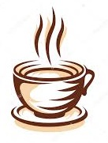

Cafés Especiais

Origens do café de especialidade
O que é café de especialidade
Mixologia: Bebidas e Drinks
Compartilhe conosco
Contatos e Referencias
Bem-vindo ao nosso site sobre cafés especiais!
Aqui você encontrará informações sobre os melhores cafés, suas origens e curiosidades.